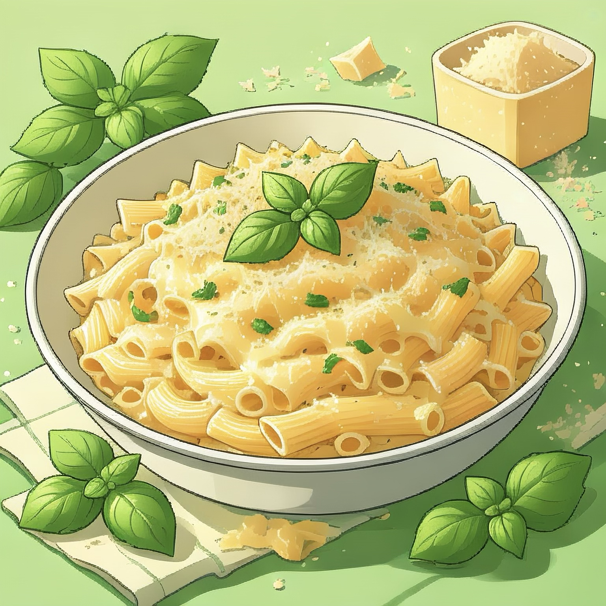

Homepage

Alfredo Pasta
This is my favorite pasta dish of all time, and as a added bonus it's very simple to make.
Ingridents
- 24 oz Fettucini Pasta (My preffered choice of pasta, but any can do)
- 1 Cup of Butter
- 1/4 Pint of Cream
- Seasoings (salt, pepper, garlic powder)
- Shredded Cheese (3/4 cup of Romano and 1/2 Parmesean)
Steps
Boil Pasta
Add Fettucini pasta and let it cook for about 8 to 10 minutes and then drain the water out.
Prep Sauce
over low heat. Once melted and mixed, add salt, pepper and garlic powder.
Cheese Up Sauce
Stir in our shredded romano and parmasean cheese until melted and <>
our sauce should be thickend when ready.
Mix and Plate
Mix the sauce with the pasta and you're done, it is ready to be plated and eaten.
Back to recipes